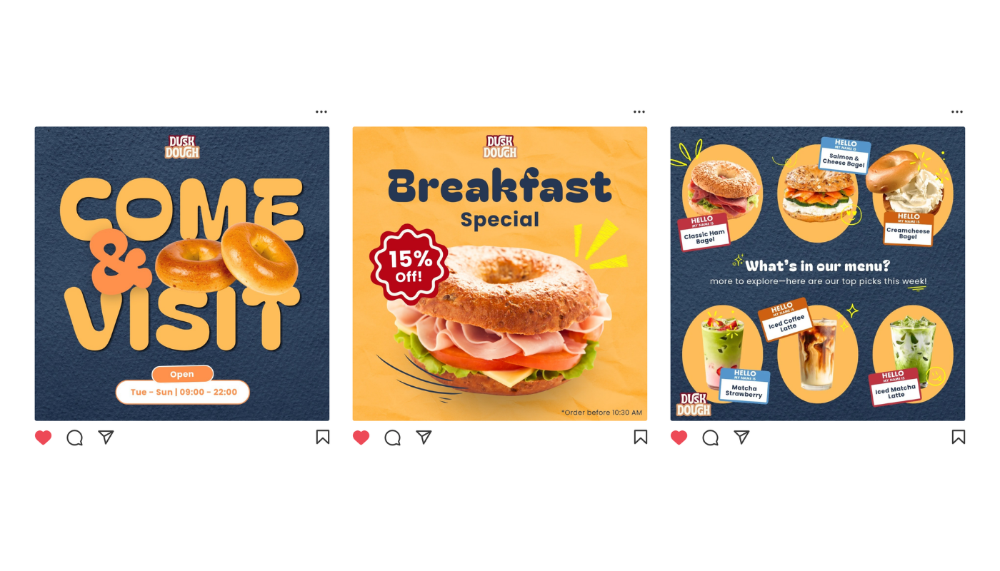
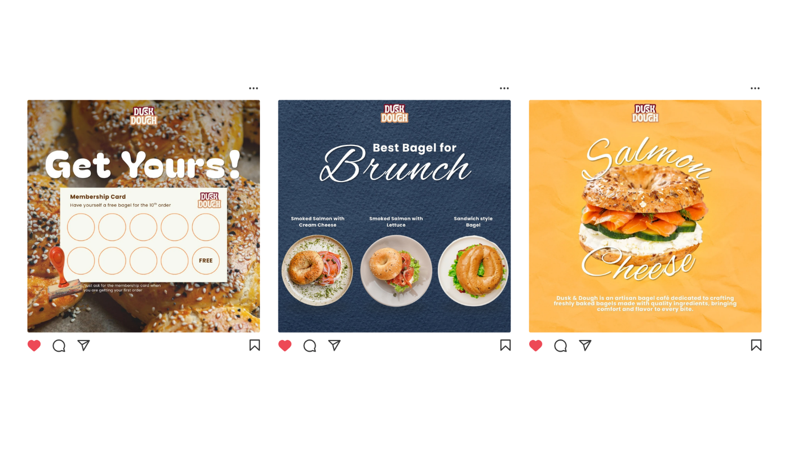
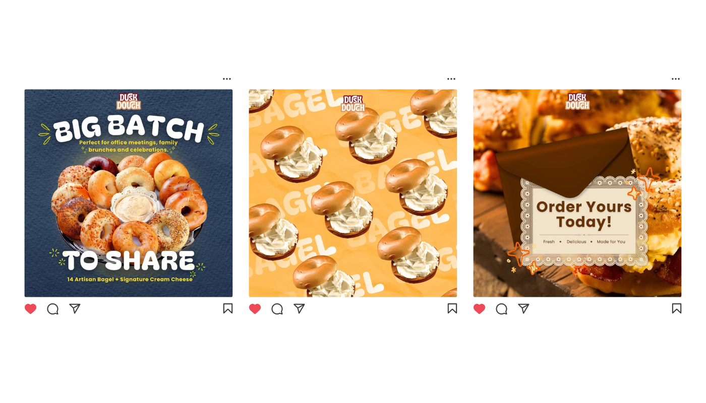

Dusk Dough Social Media Campaign

Project Overview
Dusk Dough is an artisan bagel brand concept that focuses on handcrafted bagels, comforting brunch experiences, and warm community interactions. This project explores how social media can be used to introduce products while building a memorable and inviting brand personality.
The campaign combines promotional content, menu showcases, loyalty programs, and storytelling posts to create an Instagram feed that feels both informative and engaging. The visual direction emphasizes warmth, freshness, and handcrafted quality.
The goal was to create a cohesive feed system that encourages customers to discover the menu, interact with the brand, and experience the café's cozy atmosphere through digital content.
Design Goal
Transforming Food Promotion into Brand Experience
The challenge was to create promotional content that goes beyond showcasing products and instead communicates the warmth, comfort, and community behind the brand.
Each post needed to serve a different marketing objective— product promotion, customer engagement, menu education, and loyalty building—while maintaining a consistent visual identity.
Creative Process
The design process focused on creating a social media campaign that balances aesthetic consistency, product promotion, and community engagement.
Brand Research
Explored visual trends from artisan bakeries and cafés to understand how food brands communicate warmth and quality through social media.
- Analyzed artisan bakery competitors.
- Collected references for cozy café aesthetics.
- Defined the brand personality as warm, friendly, and handmade.
- Created moodboards for typography, color palette, and layouts.
Content Planning
Planned content pillars to ensure the feed balances promotion, storytelling, and customer engagement.
- Menu showcase posts.
- Promotional campaigns.
- Membership and loyalty programs.
- Interactive community content.
- Product storytelling and ingredient highlights.
Visual Design System
Developed a cohesive visual language using warm yellow tones, dark navy backgrounds, playful typography, and appetizing food photography.

Engagement Content
Created content designed to encourage interaction and build customer relationships beyond product promotion.
- Membership card campaign.
- Breakfast special promotions.
- Menu recommendation posts.
- Group order promotions.
- Call-to-action ordering content.

Feed Composition
Refined spacing, typography, colors, and visual hierarchy to ensure each post functions independently while contributing to a cohesive and recognizable brand experience.

Key Design Focus
- Built a cohesive social media visual identity.
- Applied food photography and storytelling principles.
- Created promotional and engagement-driven content.
- Designed content supporting customer loyalty programs.
- Maintained consistency in typography, colors, and layouts.
- Communicated the warm and handcrafted personality of the brand.